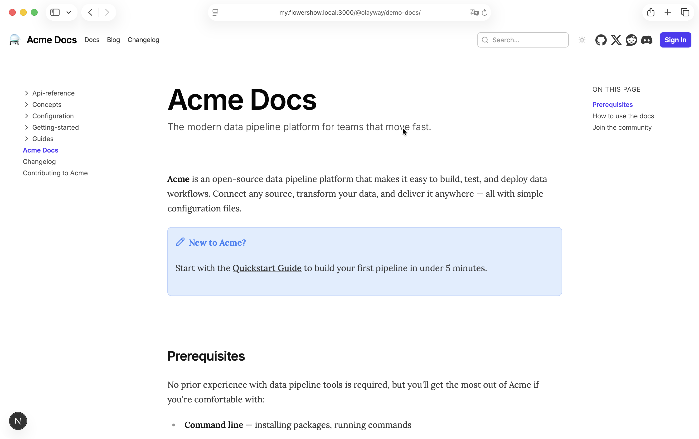
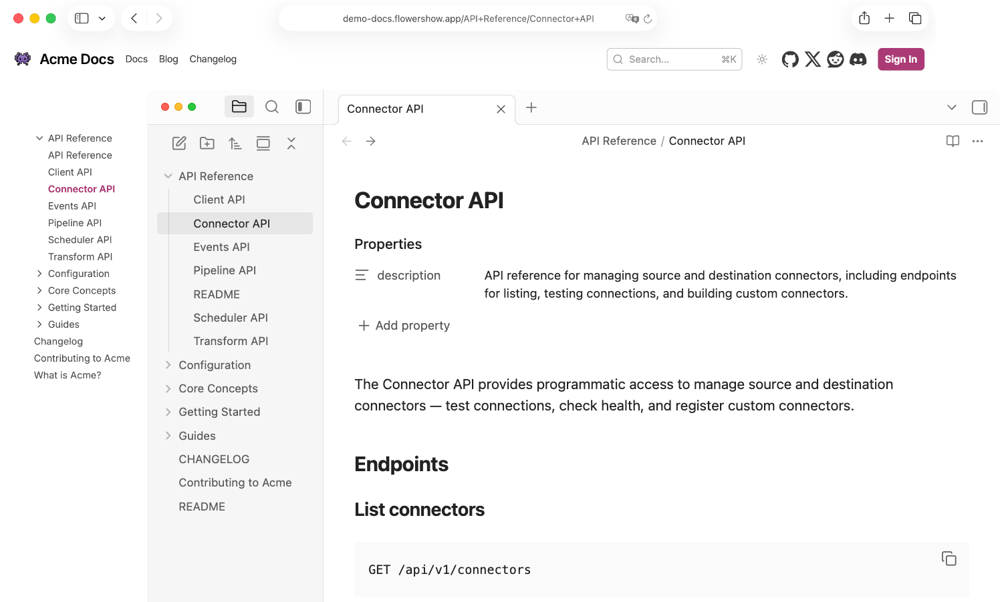
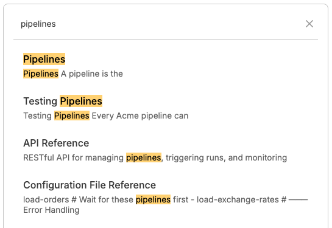
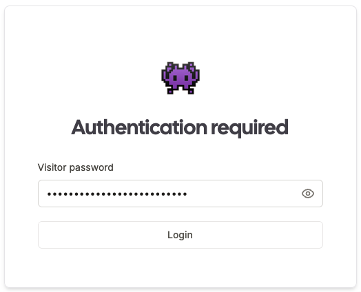
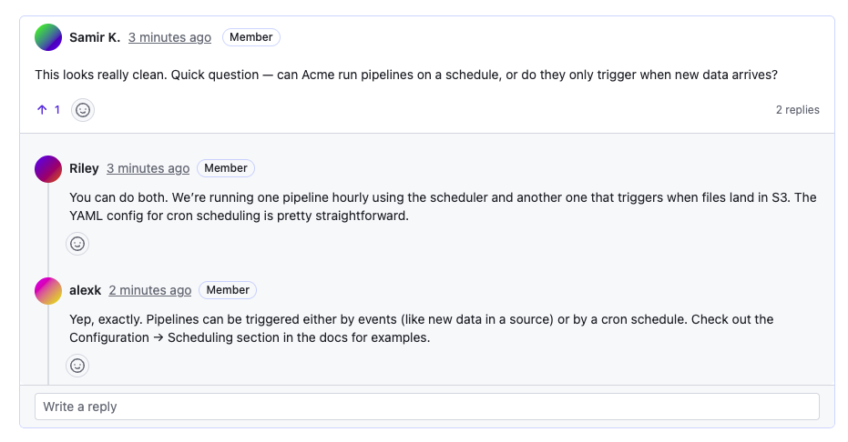

No setup ceremony.

Upload your files. That's enough.

Turn a folder of Markdown files into a live docs site, in seconds.
990+ sites published · Free plan — forever.
Upload your files. That's enough.

Pick one. You can switch later.
Keep docs in your repo.
Push changes — they auto-sync.
Drag in your Markdown files. Get a site link instantly.
Get started →Keep writing in your vault. Publish with our official Obsidian plugin.
Get started →Publish from the terminal. Script it if you want.
Get started →
Your folders become sections. Your files become pages. URLs follow the same structure. No separate navigation config.

Built-in search
Press ⌘K and find what you need instantly.

Make your docs public. Or keep them internal.
Push to GitHub. Run the CLI. Sync from Obsidian. Refresh the page. It's live. No rebuild ritual. No “deployment in progress” anxiety.

Feedback, questions, discussions — right on the page.
Keep your docs where they already live. Your repo stays the source of truth. Changes auto-sync. No migration to a proprietary editor.
Start with plain Markdown. Add richer blocks when they help. Your docs stay readable as files — not trapped in a proprietary editor.
Plain Markdown works out of the box. Use extensions only when they help.
Flowershow is intentionally minimal. But you still get the few knobs that matter — branding, domains, and a place for your own CSS.
Real documentation sites published with Flowershow.
No. Upload your Markdown files or connect a GitHub repository. Navigation is generated from your folders and your site is live in seconds. There’s no theme setup or build pipeline to manage.
Push to GitHub. Or sync via CLI or Obsidian. Refresh the page — your changes are there. No manual deployment step.
Yes. Your repository stays the source of truth. Flowershow publishes directly from it and auto-syncs changes. There’s no proprietary editor to migrate to.
Yes. You can publish public documentation or keep it internal. The workflow is the same either way.
Your documentation is just Markdown files. You can take them anywhere — another host, another tool, or your own infrastructure.
No. If you can organize files into folders, you can publish documentation. You don’t need to know what a static site generator is.